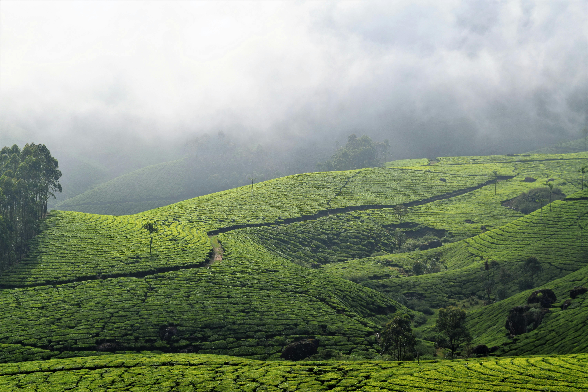
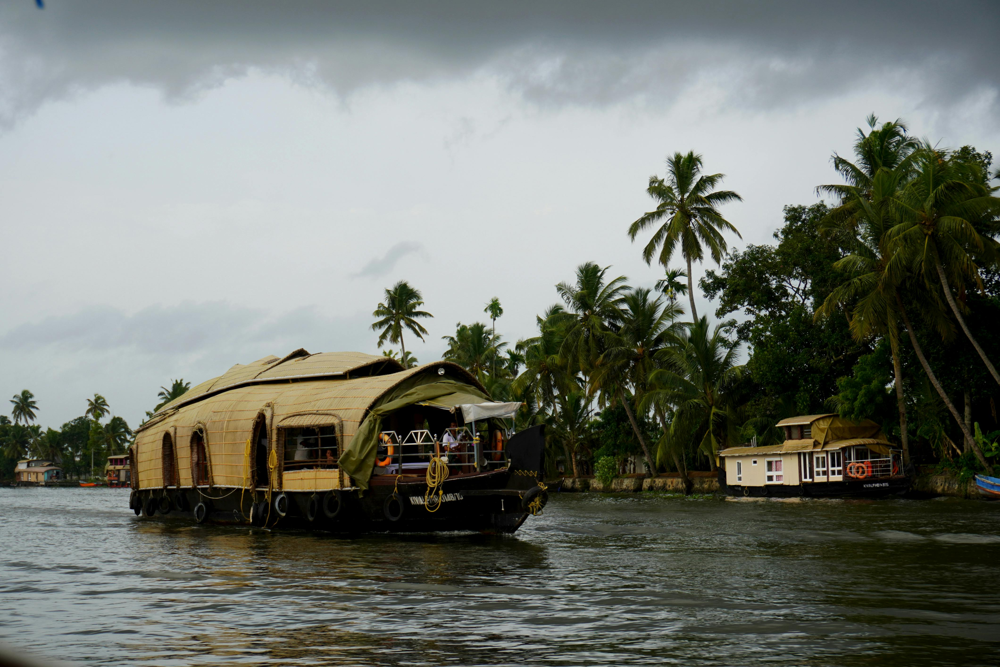
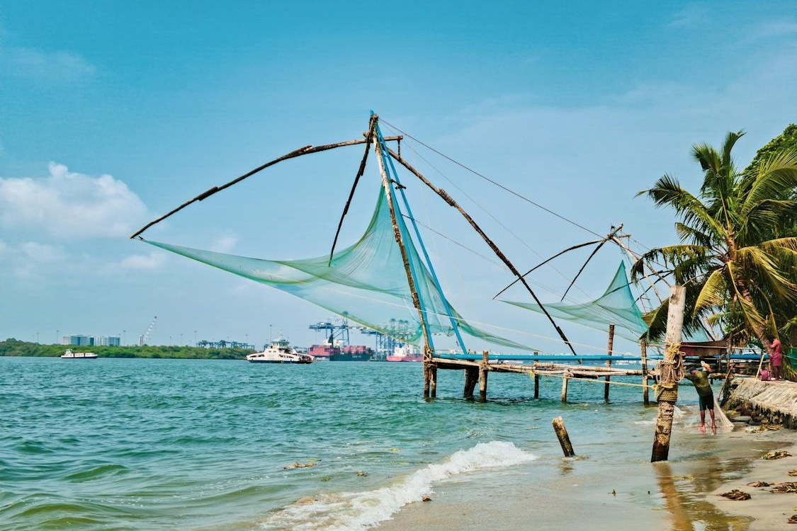
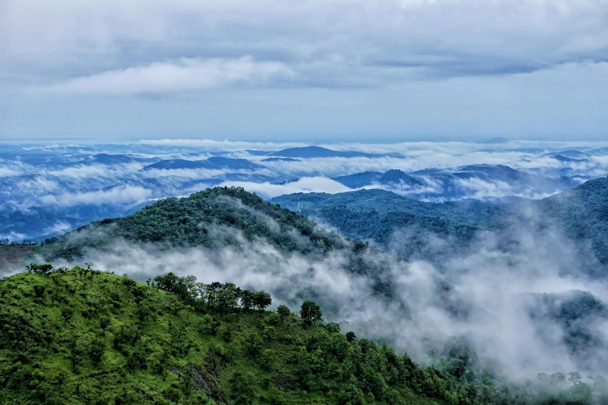

Top Destinations

Munnar
Rolling hills and tea plantations make Munnar a dream destination for nature lovers.

Alleppey
Famous for its mesmerizing backwaters and luxurious houseboat cruises.
Kovalam
Home to stunning beaches and vibrant seaside resorts.

Kochi
A vibrant port city blending colonial charm, backwaters, and modern culture.

Wayanad
A nature lover's paradise with lush forests, waterfalls, and wildlife.

Trivandrum
Kerala’s capital city, where heritage, beaches, and modernity blend seamlessly.